汇编语言
课程概要
人与人沟通需要使用到语言，人与计算机沟通也需要一种语言进行，你要跟计算机进行沟通，必须要使用计算机可以识别的语言，这种语言我们称之为机器语言，也就是0和1，二进制。
但对于人来说机器语言（二进制）比较难懂，所以前人就在这个基础上衍生出了「汇编语言」，相比于机器语言，汇编语言更加通俗易懂一些，但汇编语言终究不是机器语言，想要计算机读懂汇编语言，就需要「编译器」来将汇编语言转为机器语言。
时代是在进步的，技术也是。伟大的前辈在基于「汇编语言」的基础上，又发明了一类语言，我们称之为「高级语言」，例如C语言，其特点就是更加贴近人类的思维、表达方式，但与「汇编语言」一样的是：「高级语言」也需要编译器将其转唯计算机能读懂的机器语言。所以综上所述，不是语言变得强大了，而是编译器变得越来越强大。
学习「汇编语言」只是为了更好的去理解「高级语言」在计算机底层做了什么事情，更好的去理解计算机底层内容与「高级语言」的特性。
进制
前面，我们有提到计算机只可以读懂机器语言，那机器语言本身就是二进制，所以为了更好的了解、学习计算机，我们要深刻的去理解什么是进制。
如果你总是以十进制为基础去考虑其他进制，包括在进制运算时，也是先考虑转为十进制再运算，这说明你不理解进制的本质，想要真正的理解进制，就要忘掉我们生活中常用的十进制，也要忘掉进制间的转换。
进制的定义：N进制，由N个符号组成，逢N进1。那么问题来了，十进制是由十个符号组成，就一定是0、1、2、3、4、5、6、7、8、9么？其实并不是，我们既然说了是由符号组成，那么十进制也可以是由A、Y、B、3、4、5、D、9、0、X组成，由什么符号，取决于定义的那个人，我定义的十进制前20个表格是这样的：
|
A |
Y |
B |
3 |
4 |
5 |
D |
9 |
0 |
X |
|
YA |
Y1 |
YB |
Y3 |
Y4 |
Y5 |
YD |
Y9 |
Y0 |
YX |
提问：1+1=3成立吗？
进制运算
基本了解进制后，我们需要了解进制间是如何运算的，八进制的10+4=？10-4=？10*4=？10/4=？首先，我们需要知道八进制的八个符号分别是什么，分别是：0、1、2、3、4、5、6、7。
那么如何计算呢？1. 写出八进制的前50 2. 借助算术表
八进制的前50表：
|
0 |
1 |
2 |
3 |
4 |
5 |
6 |
7 |
|
10 |
11 |
12 |
13 |
14 |
15 |
16 |
17 |
|
20 |
21 |
22 |
23 |
24 |
25 |
26 |
27 |
|
30 |
31 |
32 |
33 |
34 |
35 |
36 |
37 |
|
40 |
41 |
42 |
43 |
44 |
45 |
46 |
47 |
|
50 |
51 |
52 |
53 |
54 |
55 |
56 |
57 |
|
60 |
61 |
加法的本质实际上就是查表，10+4，就是从10这个数字开始依次往后查4位，那么其结果就是14。那么10-4就是依次向前查4位，10*4就等于10+10+10+10，那么是否等于从10这个数字开始依次往后查3个10位呢？其实并不是，因为这里是八进制，我们要严格按照八进制的表示来，这里的10（一零）实际上表示8个，也就是从10这个数字开始依次往后查3个8位，10*4的结果也就是40。
借助写表格的方式去查表计算，这并不高效，那么回想一下我们从学习数学开始是怎么学习计算的呢？相信你已经回忆起来了，我们是借助加减乘除这四张算术表去计算的，那么在这里我们可以尝试写一下八进制的加法算术表：
|
1+1 = 2 |
||||||
|
1+2 = 3 |
2+2 = 4 |
|||||
|
1+3 = 4 |
2+3 = 5 |
3+3 = 6 |
||||
|
1+4 = 5 |
2+4 = 6 |
3+4 = 7 |
4+4 = 10 |
|||
|
1+5 = 6 |
2+5 = 7 |
3+5 = 10 |
4+5 = 11 |
5+5 = 12 |
||
|
1+6 = 7 |
2+6 = 10 |
3+6 = 11 |
4+6 = 12 |
5+6 = 13 |
6+6 = 14 |
|
|
1+7 = 10 |
2+7 = 11 |
3+7 = 12 |
4+7 = 13 |
5+7 = 14 |
6+7 = 15 |
7+7 = 16 |
这样再去计算八进制的算术题，就简单多了，其他进制运算以此类推。
二进制简写形式
在之前的课程概要中，我们说了计算机只能读懂机器语言（二进制），相信很多人就开始疑惑了，为什么计算机只能读懂二进制？原因是因为计算机是需要电的，而电路设计只有两种状态：1（真·通电）0（假·未通电），所以计算机中存储的任何文件、接收的任何指令都是由0和1组成的。
在这里，我们可以借助UltraEdit软件打开一个EXE文件：

打开一看，为什么这里没有显示二进制0和1呢？是因为二进制使用、阅读都比较麻烦，所以如上图所示，展示出来的是十六进制，这里我们也可以称之为二进制的简写方式。
在计算机中二进制和十六进制的对应关系如下：
|
二进制 |
0000 |
0001 |
0010 |
0011 |
0100 |
0101 |
0110 |
0111 |
1000 |
1001 |
1010 |
1011 |
1100 |
1101 |
1110 |
1111 |
|
十六进制 |
0 |
1 |
2 |
3 |
4 |
5 |
6 |
7 |
8 |
9 |
A |
B |
C |
D |
E |
F |
这个对应关系表需要熟练掌握，做到看见二进制可以直接转为十六进制，反之亦然。
数据宽度
我们熟知的数字，也就是数学上的数字，理论来说只要你能写、纸张足够多，那么你是可以写任意大小数字的；但在计算机中，因为受到硬件的制约，数据是有长度限制的，我们一般称之为「数据宽度」，超出最多宽度的数据会被丢弃掉。
数据宽度也有自己的单位：
|
名称 |
大小 |
|
位（BIT） |
█（1位） |
|
字节（Byte） |
█|█|█|█|█|█|█|█（8位） |
|
字（Word） |
█|█|█|█|█|█|█|█|█|█|█|█|█|█|█|█（16位、2个字节） |
|
双字（Doubleword） |
█|█|█|█|█|█|█|█|█|█|█|█|█|█|█|█|█|█|█|█|█|█|█|█|█|█|█|█|█|█|█|█（32位、2个字、4个字节） |
当我们存储数据的时候，需要知道自己存储的数据的数据宽度是什么，假设你要存储一个1，要存入字节中，那么以二进制的表示即为：0000 0001
在之前我们也说到二进制的简写形式就是十六进制，那么0000 0001转为十六进制即为0x01（0x开头表示这是一个十六进制，每4个0和1转为一个十六进制），那么字节（Byte）的存储范围使用十六进制表示则为：0 - 0xFF，以此类推，字（Word）的存储范围：0 - 0xFFFF，双字（Doubleword）的存储范围：0 - 0xFFFFFFFF。
无符号数、有符号数
无符号数和有符号数，你不需要去弄清楚这两个名词的意思，只需要了解其不同点与相同点。
我们来举例说明二进制：0100 1000，它为无符号数编码规则是如何的？为有符号数呢？
|
无符号数 |
有符号数 |
|
0x48、72 |
0x48、72 |
直接转为十六进制与十进制，有无符号数都是一样的，但如果是1000 1000，其有无符号数的结果截然不同。
需要了解其不同之处，我们还要去了解原码、反码、补码的相关知识。
在这一节我们可以暂时得出结论：无符号数存储在计算机内就是其本身的值。
原码、反码、补码
上一章我们学习了无符号数和有符号数，但实际上我们只了解到无符号数存储的编码规则，对有符号数不了解，这一章来聊一下原码、反码、补码。
原码：最高位为符号位，其余各位为数值本身的绝对值
反码：正数反码与原码相同，负数符号位为1，其余位对原码取反
补码：正数补码与原码相同，负数符号位为1，其余位对原码取反加1
举例说明，我们分别以字节（Byte）的形式将1、6、-1这三个有符号数存入计算机中，其二进制表示为？
1是一个正数，所以二进制原码、反码、补码都为：0000 0001；同理数字6也是如此。
-1是一个负数，我们知道有符号数最高位为符号位（最高位就是左边第一个数字），负数符号位为1，所以其二进制的原码为：1000 0001，但这是最终存入计算机中的二进制吗？并不是，在计算机中有符号数负数存储是以补码形式存储的：
通过原码：1000 0001，我们可以知道其反码为：1111 1110，补码（可以理解为在反码的基础上加一）为：1111 1111
计算机不会做加法
计算机只认识0和1，它能做的运算归根结底也就是对0和1进行运算，例如2+3、2-3，这种运算计算机是通过位运算去实现的，所以计算机本质上是不会做加法的。所以本章节主要是学习位运算：与、或、异或、非、左移、右移。
与运算：两个位都为1，结果才为1

或运算：只要有一个为1就为1

异或运算：不一样时则为1

非运算：0就是1、1就是0

左移：各二进制位全部左移若干位，高位丢弃，低位补0
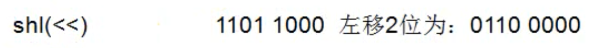
右移：各二进制位全部左移若干位，低位丢弃，高位补0（shr）或补符号位（sar）
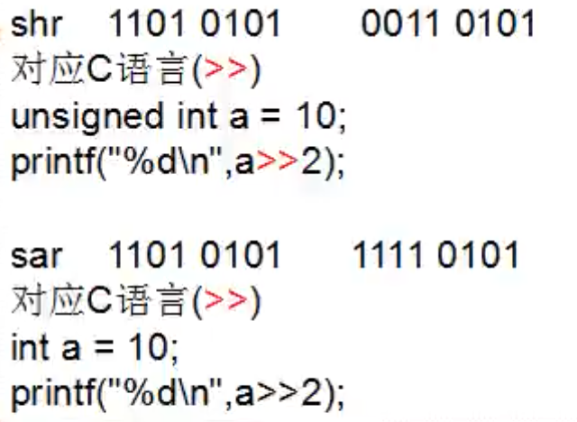
位运算加减乘除
计算机通过位运算实现加减乘除，而我们都知道所有算术都是通过加法演变的所有算术都是通过加法演变的，所以我们只需要明白计算机是如何通过加法计算的，其他就都明白了。
4+5的运算过程：
转为二进制：0000 0100、0000 0101
两者进行异或得出：0000 0001
判断是否存在进位（两者进行与运算）：0000 0100，这里与运算结果不为0（二进制：0000 0000）则表示存在进位
继续进行异或：步骤二的结果与左移一位的步骤三结果 → 0000 0001 xor 0000 1000，得出：0000 1001
步骤四的结果还需要判断是否存在进位（与运算）：步骤二的结果与左移一位的步骤三结果 → 0000 0001 and 0000 1000，得出：0000 0000，则表示不存在进位，步骤四的结果则为4+5的最后结果
二进制：0000 1001转为十进制：9
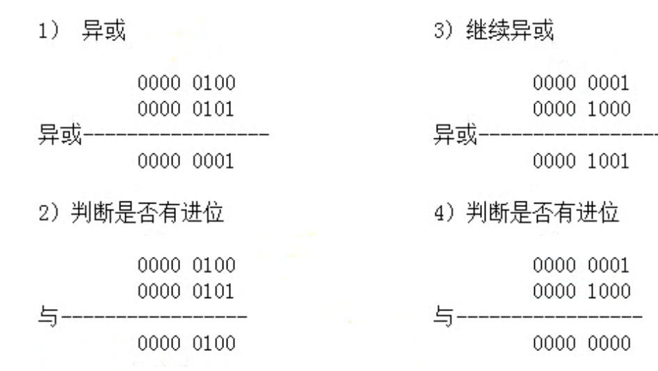

通用寄存器
在了解寄存器之前，我们需要知道计算机在哪存储数据，分别是三个地方：CPU > 内存 > 硬盘，寄存器是指CPU存储数据的地方。如果你是一个32位的CPU，那么它能提供的寄存器则有：8、16、32位的寄存器。
在本课程中学习的汇编语言是32位的，虽然现在大部分计算机都是64位的，但从本质上来说64位也是从32位衍生的，只有你学好了32位才能更容易的去学64位。
通用寄存器表示其通用性，可以往里面存储任意数据和值。
32位的通用寄存器（8个）：EAX、ECX、EDX、EBX、ESP、EBP、ESI、EDI
我们可以使用MOV指令取使用通用寄存器：mov eax, 1，其表示将eax的值变成1。
那么除了32位的通用寄存器外还有8位、16位，我们分别来看一下：
|
通用寄存器 |
||
|
32位 |
16位 |
8位 |
|
EAX |
AX |
AL、AH |
|
ECX |
CX |
CL、CH |
|
EDX |
DX |
DL、DH |
|
EBX |
BX |
BL、BH |
|
ESP |
SP |
|
|
EBP |
BP |
|
|
ESI |
SI |
|
|
EDI |
DI |
|
从这张表中我们可以总结一下：
（知识）只有EAX、ECX、EDX、EBX有8位寄存器
（技巧）16位寄存器名称就是去掉了32位寄存器的E、8位就是32位中间的字母加上L和H
举例：那么AX、AL、AH分别代表着EAX的哪一部分呢？我们使用DTDebug打开一个EXE可执行文件：
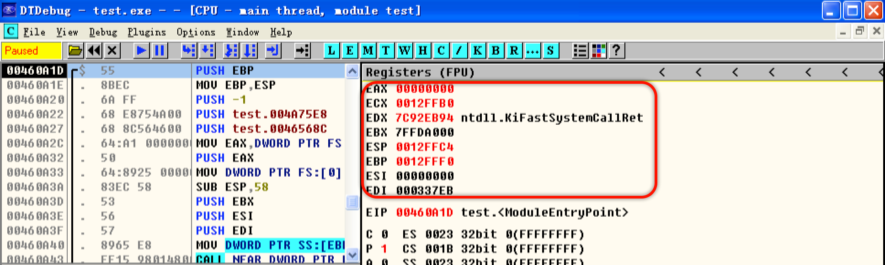
我们可以很清晰的在右边看见8个32位通用寄存器及其对应的值，这里表示出来是以十六进制形式，所以值一共有八个，一个表示4位，2个表示一个字节。
我们要想分清楚AX、AL、AH分别代表着EAX的哪一部分，可以使用MOV指令来看看。
MOV AX, 0x1111：AX占2个字节（4个16进制），AX表示EAX中的2个低位字节（或者可以理解：表示EAX从右到左的2个字节）。
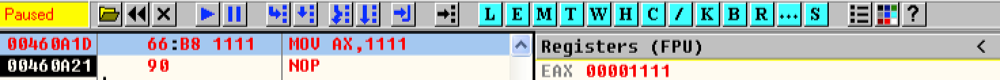
MOV AL, 0x22：AL占1个字节（2个16进制），AL表示AX中的一个低位字节。
MOV AH, 0x33：AH占1个字节（2个16进制），AH表示AX中的一个高位字节。

了解了EAX、AX、AL、AH，其他的寄存器以此类推即可。
题外话：看这个数值，从右到左，偏左的为高位；除特定值以外，汇编不区分大小写。
内存
每个应用程序都会有自己的独立4GB内存空间，这里的内存说的就是这4GB而并不是我们所熟悉的内存条。
内存和寄存器都是存储数据的，但由于CPU中的寄存器有限（造价比较昂贵），所以我们可以给每一个寄存器取名，但内存不一样，内存太大了无法取名字，所以我们只能使用编号。当我们想向内存中读取数据时，就需要使用到这个编号，这个编号我们称之为内存地址（32位），每一个内存地址（编号）都能存储一个字节（8位）。内存地址是32位的（32位表示32个0和 1，但我们一般使用16进制去表示，例如：0x00000000），程序独立存储的内存空间范围为：0 - 0xFFFFFFFF，能存储的位数就是(0xFFFFFFFF+1)*8，加一是因为0也算一位，乘八是因为每块内存可以存储一个字节（8位），转为十进制就是：34359738368 / 8 / 1024 / 1024 / 1024 = 4G（换算：1Byte = 8Bit, 1KB = 1024Byte, 1MB = 1024KB, 1GB = 1024MB），这也就是「每个应用程序都会有自己的独立4GB内存空间」的原因。
之前我们学习过了MOV指令，那这个指令也可以向内存中添加数据或从内存中获取数据：
MOV DOWRD PTR DS:[内存地址], 立即数MOV DOWRD PTR DS:[内存地址], 32位通用寄存器MOV 32位通用寄存器, DOWRD PTR DS:[内存地址]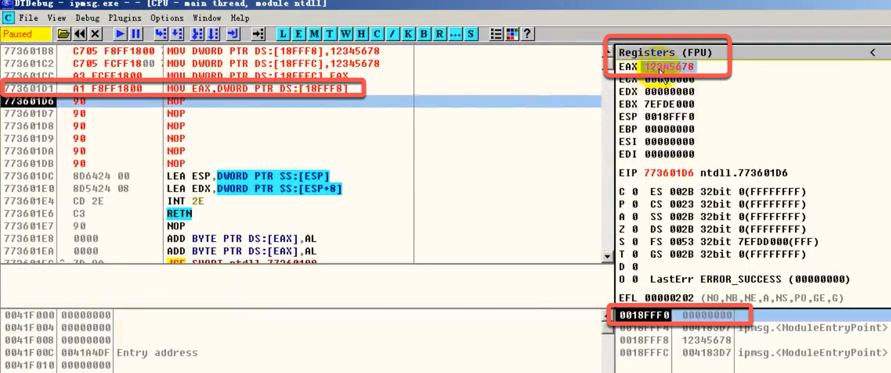
需要注意的是如上所述指令中DOWRD为数据宽度，存储的数据需要与DOWRD数据宽度一致，当然这里也可以为BYTE、WORD，例如：
MOV WORD PTR DS:[内存地址], 立即数内存地址的5种形式
内存地址表示有很多种形式：
形式一：立即数
// 读取内存的值mov eax, dword ptr ds:[0x13FFC4]// 向内存中写入数据mov dword ptr ds:[0X13FFC4], eax形式二：[寄存器]
// 读取内存的值move ecx, 0x13FFD0mov eax, dword ptr ds:[ecx]// 向内存中写入数据mov edx, 0x13FFD8mov dword ptr ds:[edx], 0x87654321形式三：[寄存器+立即数]
// 读取内存的值mov ecx, 0x13FFD0mov eax, dword ptr ds:[ecx+4]// 向内存中写入数据mov edx, 0x13FFD8mov dword ptr ds:[edx+0xC], 0x87654321形式四：[寄存器+寄存器*{1,2,4,8}]
// 读取内存的值mov eax, 0x13FFC4mov ecx, 0x2mov edx, dword ptr ds:[eax+eax*4]// 向内存中写入数据mov eax, 0x13FFC4mov ecx, 0x2mov dword ptr ds:[eax+eax*4], 0x87654321形式五：[寄存器+寄存器*{1,2,4,8}+立即数]
// 读取内存的值mov eax, 0x13FFC4 mov ecx, 0x2mov edx, dword ptr ds:[eax+eax*4+4]// 向内存中写入数据mov eax, 0x13FFC4mov ecx, 0x2mov dword ptr ds:[eax+eax*4+4], 0x87654321存储模式（大、小端）
要在计算机中存储数据，需要遵循其的存储模式，存储模式分为两种：大、小端。
大端模式：数据高位在低位地址中，数据低位在高位地址中；
小端模式：数据低位在低位地址中，数据高位在高位地址中。
如下图中所示，内存地址从小到大；我们知道每一个内存地址可以存储8位，也就是一个字节，当我们使用MOV指令写入数据到内存中时指定宽度为BYTE存储数据会存储在一个内存地址中，而当我们指定数据宽度为WORD、DWORD呢？
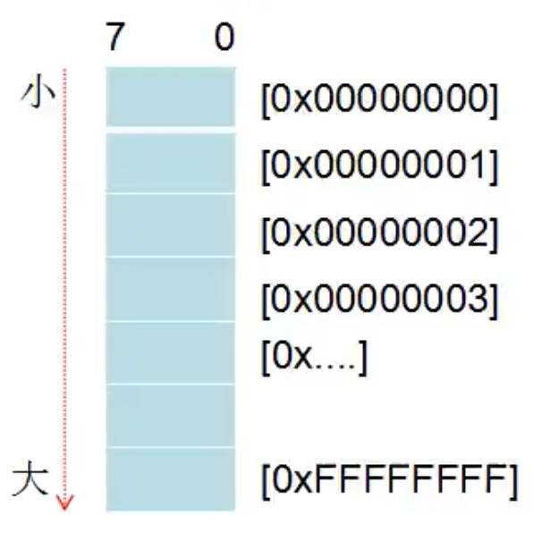
汇编指令：
mov word ptr ds:[0x00000000], 0x1A2B这里存储的是2个字节的数据，那么按照大端模式去存储，0x1A2B数据高位就是1A，低位就是2B，内存地址中从小到大，小的则是低位，高的则是高位，所以内存地址0x00000000存储1A，0x00000001存储2B；小端模式则内存地址0x00000000存储2B，0x00000001存储1A。
我们可以尝试使用汇编指令写入数据到内存中：
mov word ptr ds:[0x0012ffc4], 0x1A2B在DTDebug中我们可以在内存窗口使用db/dw/dd 内存地址的格式（byte、word、dword）来查看内存，在这使用db 0012ffc4才可以清晰的看出数据存储位置：

在这里我们可以看见2B存储在了内存地址0012ffc4，1A存储在了内存地址0012ffc5。（在这里内存地址是依次是从左到右的）
也就表示我们的数据存储模式是小端模式，而一般来说在80x86处理器上，绝大部分的应用数据存储都是采用小端模式，在ARM上则是大端模式。
常用汇编指令
我们常用的汇编指令有：MOV、ADD、SUB、AND、OR、XOR、NOT
如下格式举例中表示含义：
含义
r 代表通用寄存器
m 代表内存
imm 代表立即数
r8 代表8位通用寄存器
m8 代表8位内存
imm8 代表8位立即数
其他以此类推
MOV指令
表示数据传送，其格式为：
// MOV 目标操作数，源操作数// 含义：将源操作数传送到目标操作数MOV r/m8,r8MOV r/m16,r16MOV r/m32,r32MOV r8,r/mMOV r16,r/m16MOV r32,r/m32MOV r8, imm8MOV r16, imm16MOV r32, imm32ADD指令
表示数据相加，其格式为：
// ADD 目标操作数，源操作数// 含义：将源操作数与目标操作数相加，最后结果给到目标操作数ADD r/m8, imm8ADD r/m16,imm16ADD r/m32,imm32ADD r/m16, imm8ADD r/m32, imm8ADD r/m8, r8ADD r/m16, r16ADD r/m32, r32ADD r8, r/m8ADD r16, r/m16ADD r32, r/m32SUB指令
表示数据相减，其格式为：
// SUB 目标操作数，源操作数// 含义：将源操作数与目标操作数相减，最后结果给到目标操作数SUB r/m8, imm8SUB r/m16,imm16SUB r/m32,imm32SUB r/m16, imm8SUB r/m32, imm8SUB r/m8, r8SUB r/m16, r16SUB r/m32, r32SUB r8, r/m8SUB r16, r/m16SUB r32, r/m32AND指令
表示数据相与（位运算知识），其格式为：
// AND 目标操作数，源操作数// 含义：将源操作数与目标操作数进行与运算，最后结果给到目标操作数AND r/m8, imm8AND r/m16,imm16AND r/m32,imm32AND r/m16, imm8AND r/m32, imm8AND r/m8, r8AND r/m16, r16AND r/m32, r32AND r8, r/m8AND r16, r/m16AND r32, r/m32OR指令
表示数据相或（位运算知识），其格式为：
// AND 目标操作数，源操作数// 含义：将源操作数与目标操作数进行或运算，最后结果给到目标操作数OR r/m8, imm8OR r/m16,imm16OR r/m32,imm32OR r/m16, imm8OR r/m32, imm8OR r/m8, r8OR r/m16, r16OR r/m32, r32OR r8, r/m8OR r16, r/m16OR r32, r/m32XOR指令
表示数据相异或（位运算知识），其格式为：
// XOR 目标操作数，源操作数// 含义：将源操作数与目标操作数进行异或运算，最后结果给到目标操作数XOR r/m8, imm8XOR r/m16,imm16XOR r/m32,imm32XOR r/m16, imm8XOR r/m32, imm8XOR r/m8, r8XOR r/m16, r16XOR r/m32, r32XOR r8, r/m8XOR r16, r/m16XOR r32, r/m32NOT指令
表示非（位运算知识），其格式为：
// NOT 目标操作数// 含义：将源操作数进行非运算，最后结果给到目标操作数NOT r/m8NOT r/m16NOT r/m32MOVS指令
表示数据传送，它与MOV的不同处在于，它可以将内存的数据传送到内存，但也仅仅能如此，其格式为：
// MOVS EDI指定的内存地址，ESI指定的内存地址// 含义：将ESI指定的内存地址的数据传送到EDI指定的内存地址（使用MOVS指令时，默认使用的就是ESI和EDI寄存器），MOVS指令执行完成后ESI、EDI寄存器的值会自增或自减，自增或自减多少取决于传送数据的数据宽度MOVS BYTE PTR ES:[EDI], BYTE PTR DS:[ESI] //简写为：MOVSBMOVS WORD PTR ES:[EDI], WORD PTR DS:[ESI] //简写为：MOVSWMOVS DWORD PTR ES:[EDI], DWORD PTR DS:[ESI] //简写为：MOVSDMOVS指令举例说明：
1. 先将ESI、EDI的值修改为对应内存地址
MOV ESI, 0x12FFC4MOV EDI, 0x12FFD02. 将0x11223344存入EDI指定的内存地址中
MOV DWORD PTR DS:[ESI], 0x11223344
3. 使用简写方式指令：MOVSD，将ESI指定的内存地址的值（4字节数据）存入EDI指定的内存地址中
MOVS DWORD PTR ES:[EDI], DWORD PTR DS:[ESI]
4. 结论：可以看到当MOVS指令执行结束后，ESI、EDI的值自增了4，「自增多少取决于传送数据的数据宽度」，所以这里是DOWRD表示4字节，也就自增了4。
5. 注意：如果DF位为0，MOVS指令执行结束后，ESI、EDI的值自增；如果DF位为1，MOVS指令执行结束后，ESI、EDI的值自减。（此块涉及标志寄存器：EFL，可以向下翻阅相关知识）
STOS指令
表示将AL/AX/EAX的值储存到EDI指定的内存地址，其格式为：
// STOS EDI指定的内存地址// 含义：将AL/AX/EAX的值储存到EDI指定的内存地址，STOS指令执行完成后EDI寄存器的值会自增或自减，自增或自减多少取决于传送数据的数据宽度，与MOVS指令一样自增或自减取决于DF位STOS BYTE PTR ES:[EDI] //简写为：STOSBSTOS WORD PTR ES:[EDI] //简写为：STOSWSTOS DWORD PTR ES:[EDI] //简写为：STOSDREP指令
表示循环，其格式为：
// REP MOVS指令/STOS指令// 含义：循环执行MOVS指令或STOS指令，循环次数取决于ECX寄存器中的值，每执行一次，ECX寄存器中的值就会减一，直至为零，REP指令执行完成REP MOVSBREP MOVSWREP MOVSDREP STOSBREP STOSWREP STOSD堆栈相关指令
在学习堆栈相关指令之前，我们需要知道什么是堆栈，实际上我们之前就提到过这个东西，堆栈就是前面我们提到的程序的独立4GB内存空间，与数据结构的堆栈无关。
有心人会在「汇编学习环境搭建」章节看见DTDebug的图，堆栈的位置在软件的右下方。
要想知道堆栈可以使用的地址范围，我们可以查看DTDebug的寄存器窗口，找到如下图红框部分：
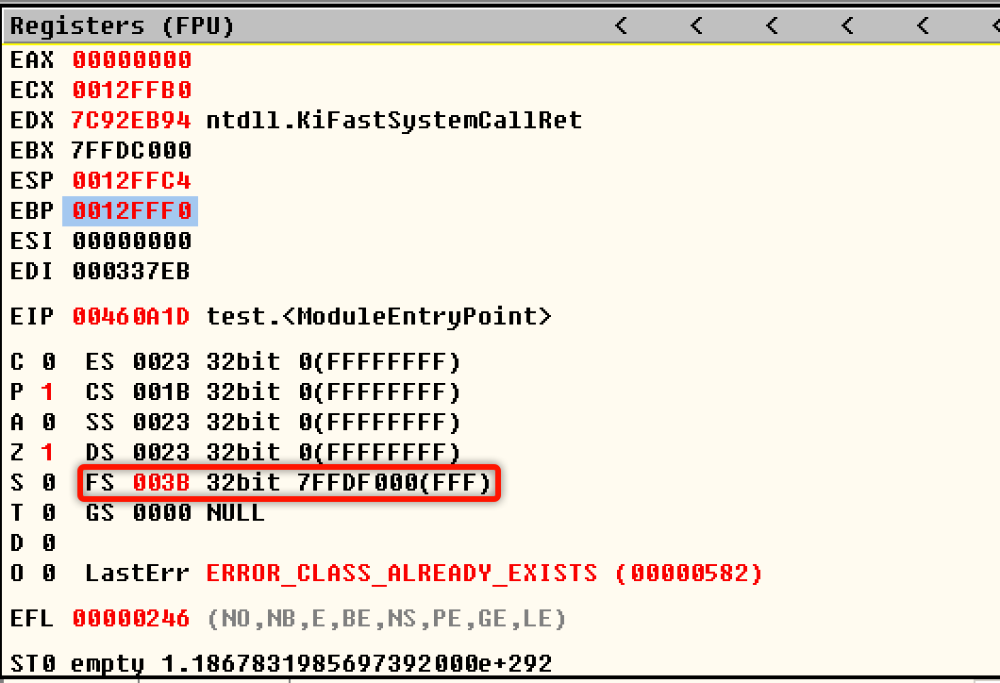
然后再到DTDebug的内存窗口，输入dd 7FFDF000，回车即可看到堆栈的地址范围了：

栈顶：0x00130000，栈底：0x0012D000，也就是说我们可以从0x0012D000用到0x00130000。
聊到堆栈，我们又不得不提一下之前所学到的通用寄存器：ESP、EBP，其分别表示栈顶指针（表示当前正在使用的堆栈地址）、栈底指针（表示当前使用的堆栈的第一个地址），当前使用的堆栈地址范围就可以是ESP - EBP。
堆栈的地址使用是从大用到小的（高位地址到低位地址），这个我们也可以从DTDebug的堆栈窗口中得出：

堆栈讲究先入后出的概念，也就是当我们先放A数据到堆栈中，再放B数据到堆栈中，当我们不使用这些数据时候就要“清理”，那么数据B就是先处理的，数据A就是后处理的。
我们想要往堆栈中压入数据就需要使用一个当前没有使用的堆栈地址避免覆盖了其他数据，也就是我们先存入数据，然后告诉堆栈当前用到了哪（提升栈顶指针ESP），在之前的章节中我们学习了使用MOV指令向内存中存储数据，在这里就可以借助MOV指令去压入数据：
mov dword ptr ds:[esp-4],0x11223344sub esp, 0x4 // 由于堆栈地址使用是从大到小的，所以使用sub指令提升esp栈顶指针（4表示我们之前存储的数据宽度为4字节，所以栈顶指针ESP需要提升4）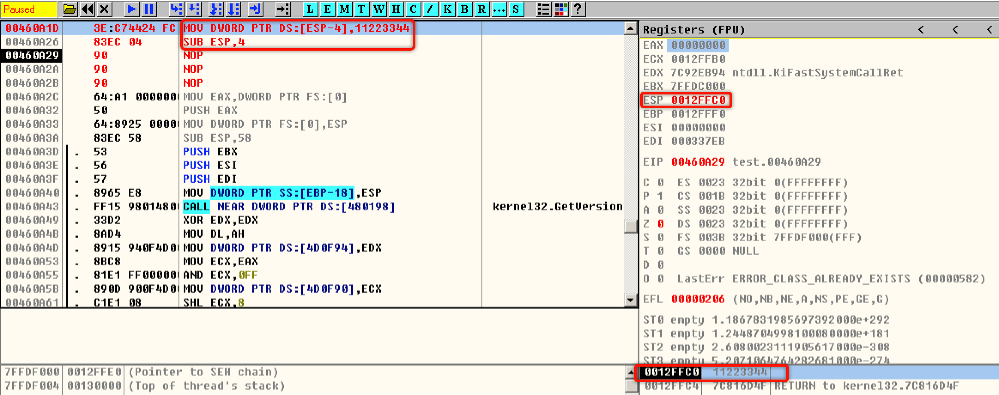
而当我们不需要使用这个数据的时候，就要释放，同样我们使用汇编指令就可以完成：
add esp, 0x4 // 直接下降栈顶指针ESP但是有一个问题，当我们把EAX的值压入堆栈中，然后再想把EAX的值放回去使用这种方法完全不行，我们还需要一个MOV指令将值放回去，这样很繁琐，所以我们可以使用堆栈指令：P USH（压入）和POP（释放）。
PUSH指令
表示压入数据，其格式为：
// PUSH 通用寄存器/内存地址/立即数// 含义：向堆栈中压入数据，压入数据后会提升（sub）栈顶指针（ESP），提升多少取决于压入数据的数据宽度PUSH r16/r32PUSH m16/m32PUSH imm8/imm16/imm32POP指令
表示释放数据，其格式为：
// POP 通用寄存器/内存地址// 含义：释放压入堆栈中的数据，释放数据后会下降（add）栈顶指针（ESP），下降多少取决于释放数据的数据宽度POP r16/r32POP m16/m32修改EIP的指令
EIP也是寄存器，但它不叫通用寄存器，它里面存放的值是CPU下次要执行的指令地址；当我们想去修改它的值就不能使用修改通用寄存器那些指令了，修改EIP有其特有的指令，接下来让我们来了解一下吧。
JMP指令
表示跳转，其格式为：
// JMP 寄存器/内存/立即数// 含义：JMP指令会修改EIP的值为指定的指令地址，也就修改了程序下一次执行的指令地址，我们也可以称之为跳转到某条指令地址。CALL指令
也可以修改EIP，跟JMP指令的功能是一样的，其格式为：
// CALL 寄存器/内存/立即数// 含义：跟JMP指令的功能是一样的，同样也可以修改EIP的值，不同的点说，CALL指令执行后会将其下一条指令地址压入堆栈，ESP栈顶指针的值减4// 注意：在我们使用DTDebug调试的时候，要跟进CALL指令不能使用F8要是用F7，这里涉及调试器相关的知识，暂时不深入了解RET指令
表示返回，其格式为：
RET// 含义：将当前栈顶指针的值赋给EIP，然后让栈顶指针加4</p>汇编眼中的函数
什么是函数？函数就是一系列指令的集合，为了完成某个会重复使用的特定功能。
那么在汇编中如何定义、使用函数呢？既然我们知道函数就是一系列指令的集合，那么只要我们随便写一段汇编代码即可：
mov eax, 0x1我们将其写在了执行地址0x00460A32中，想要调用这个函数，需要使用JMP、CALL指令来调用。
但是我们一般不会使用JMP来调用函数，因为它执行完后没办法返回到原来要执行的地址，所以我们选择CALL指令，CALL指令需要搭配RET指令一起使用。
一般我们在函数指令集合的最后写入RET指令，以此来实现函数执行完后返回原来要执行的地址继续执行。

那假设我们需要做一个任意两个数的加法函数该怎么办？这时候就需要想办法将我们的任意两个数传入函数中，这也就是参数；加法函数计算结果就称之为返回值。
返回值在汇编中一般使用EAX存储，我们可以使用ECX、EDX作为传递参数，接下来我们编写加法函数：
add eax,ecxadd eax,edxret实际场景：
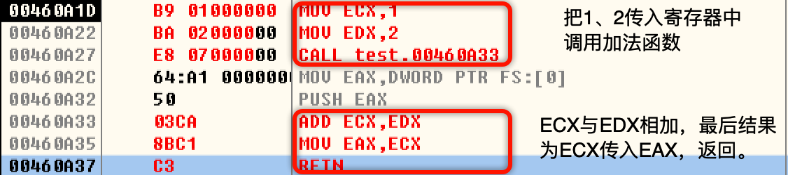
在这里我们使用的是寄存器传递参数，但实际上还可以使用堆栈传参数，下一章节我们会介绍。
堆栈传参
当函数有很多参数的时候，不止8个，那我们使用通用寄存器去传参，明显不够用，所以我们需要使用堆栈帮助我们传递参数。
还是以加法举例，实际场景：

如上图所示实现算术1+2，首先将1、2依次压入堆栈，CALL指令也会将其下一行指令地址压入堆栈，所以堆栈地址[ESP+8]为第一个压入的数据，堆栈地址[ESP+4]为第二个压入的数据。
堆栈平衡
我们知道当执行函数调用CALL指令的时候，会把CALL指令下一条指令的内存地址压入堆栈（ESP值减4）；在函数内我们可以随意使用堆栈，比如PUSH指令压入堆栈，使用堆栈传参等等...
我们需要保证，在函数调用结束的时候（即执行RET指令之前，要把ESP栈顶指针的值修改为执行CALL指令压入堆栈或堆栈传参压入堆栈前的那个ESP栈顶指针的值），保证函数运行前与运行后ESP栈顶指针的值不变，这个我们称之为堆栈平衡。
第一种情况导致堆栈不平衡（函数内压栈）：

函数内压栈会导致执行RET指令后，ESP-4，程序会到00000002这个执行地址继续执行，而不再是CALL指令下一行地址继续执行。
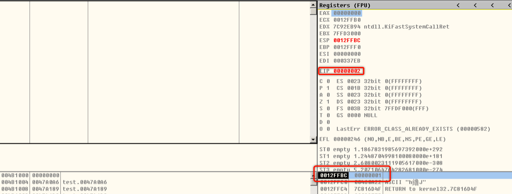
第二种情况导致堆栈不平衡（堆栈传参）：
当RET指令之后，栈顶指针无法回到传参前的值。
平衡堆栈有两个方法：
1.外平栈：使用ADD指令。

2.内平栈：使用RET指令，例如压入了2个32位（4字节）数据就可以写为RET 8。
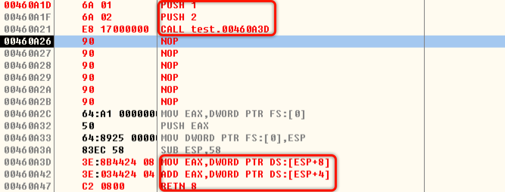
对于第一种情况我们可以在函数内使用完堆栈后，POP释放数据；对于第二种堆栈传参导致的堆栈不平衡，我们可以使用外平栈、内平栈的方法。
ESP寻址
之前我们了解了函数，以及堆栈传参，那其实我们获取参数就是借助的ESP去获取对应参数的地址，这种行为我们称之为ESP寻址。
需要注意的是我们获取参数的值，指令应为：
mov eax, dword ptr ss:[esp+4]你会发现原来指令中的ds变为了ss，这是因为当你的内存地址是esp或ebp组成的需要使用ss，暂时先不用管原因。
ESP寻址弊端：当函数比较复杂时，使用的时候要使用很多寄存器，需要把寄存器的值保存在堆栈中备份，寻址计算会复杂一些。
EBP寻址
之前都是借用ESP去寻址确定一些参数 ，但如果存到堆栈里面的值过多，那么就得不断地调整ESP的指向，这是ESP寻址的缺点。
那么EBP寻址的思路是什么呢？先把EBP的值保存起来 然后然后EBP指向ESP的位置，然后在原来的堆栈基础上ESP上移，重新变成一块新的堆栈；之后新的程序再使用堆栈的时候，只影响ESP但不会影响EBP，那我们寻址的时候使用EBP去寻址，EBP的位置相对固定，程序不管如何操作ESP都会不停浮动，但是EBP相对稳定。

标志寄存器
在DTDebug中标志寄存器就是这一部分：
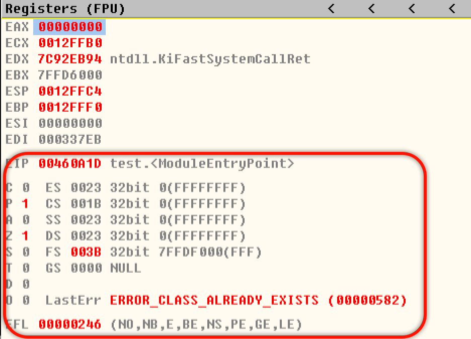
16位标志寄存器是：FLAGS
条件标志位：SF、ZF、OF、CF、AF、PF
CPU在执行完一条指令之后进行自动设置，反映了算数、逻辑运算等指令执行完毕之后，运算结果的特征。
控制标志位：DF、IF、TF
控制CPU的运行方式和工作状态。
条件标志位
进位标志：【CF】—运算结果的最高有效位有进位（加法）或者借位（减法）。用于表示两个无符号数高低。
零标志：【ZF】—如果运算结果位0，则ZF=1，否则ZF=0
溢出标志位：【OF】—当将操作数作为有符号数的时候，使用该标志位判断运算结果是否溢出。加法：若相同符号数相加，结果的符号与之相反则OF=1，否则OF=0。
减法：若被减数与减数符号不相同，而结果的符号与减数相同则OF=1，否则OF=0发生溢出，说明运算的结果已经不可信
标志符号：【SF】—运算结果最高位为1，SF=1，否则SF=0。有符号数用最高有效位表示数据的符号，最高有效位是标志符号的状态。
奇偶标志位：【PF】—当运算结果（指的是低8位）中1的个数为偶数时，PF=1，否则PF=0。该标志位主要用于检测数据在传输过程中是否出错
辅助进位标志位：【AF】—一个字节运算的时候低4位向高4位的进位和错位。
注意
1. 进位针对的是无符号数运算，溢出针对的是有符号数运算
2. 进位了，可以根据CF标志位得到正确的结果，溢出了，结果已经不正确了。
3. 汇编中的数据类型由程序员决定，也就是没有类型，程序员说是什么类型就是什么类型。所以当看到无符号数，则关注CF标志，看成有符号数，关注OF标志。
如下汇编代码：
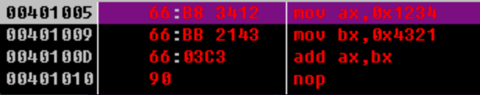
我们往下走两步完成赋值
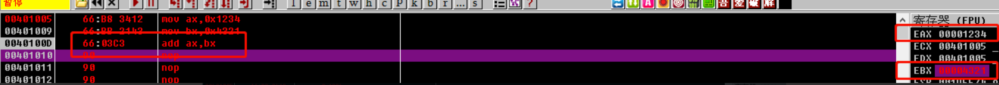
现在去跑ADD指令：
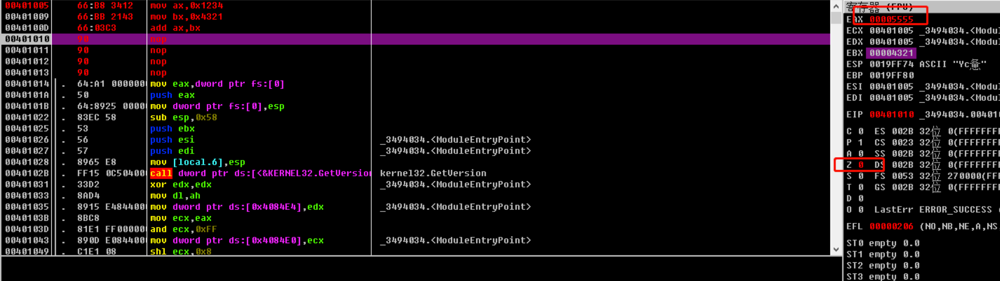
因为此处ADD指令是进行了运算结果不是0，固ZF位=0，在汇编中没有像C语言这样高级语言中有if语句、while语句，那它是怎么实现这些功能呢？
标志寄存器
JCC指令
如何操作标志寄存器
LAHF（Load AH with flags）指令：用于将标志寄存器的低八位送入AH，即将标志寄存器FLAGS中的SF、ZF、AF、PF、CF五个标志位分别传送到AH的对应位（八位中有三位是无效的）
SAHF（store AH into flags）指令：用于将AH寄存器送入标志寄存器
PUSHF（push the flags）指令：用于将标志寄存器送入栈 → push eflags
POPF（pop the flags）指令：用于将标志寄存器送出栈 → pop eflags
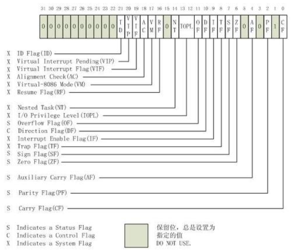
我们来做一个实验，首先将EAX置为0，然后CF、PF位为1，这时候我们调用LAHF将标志寄存器送入AH会得到怎样的数据呢？

这时候我们F8运行这一条指令，我们就会发现AH=0x700，这里我们来算一下

那么转换过来就是011100000000 → 0x700，CF和PF位之间的下标为1的空，默认为1。